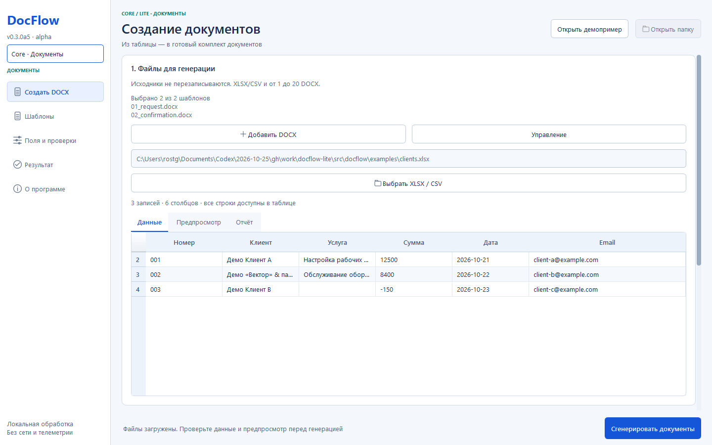

01 / CORE · LITE
Из Excel — в ваши документы Word.
Таблица содержит данные, шаблоны задают форму. Core проверяет записи и создаёт отдельный комплект для каждой подходящей строки.
- XLSX и CSV
- Сопоставление полей
- Профили и отчёт
ДОКУМЕНТЫ · ОБОРУДОВАНИЕ · РЕМОНТЫ
Собирайте документы из таблицы или ведите историю каждого аппарата. Выберите свой рабочий процесс — данные остаются на вашем компьютере.

ДВА ПРОЦЕССА. ОДНА ЛОГИКА.
Документы и журнал ремонтов решают разные задачи. Мы сохранили для каждого понятный путь.
Таблица содержит данные, шаблоны задают форму. Core проверяет записи и создаёт отдельный комплект для каждой подходящей строки.
Клиент, оборудование и отдельные обращения. Работы, детали, сметы и документы связаны с конкретным ремонтом.
CORE / РАБОЧАЯ ПОСЛЕДОВАТЕЛЬНОСТЬ
Таблица Excel или CSV и ваши DOCX-шаблоны с переменными.
Сопоставьте столбцы, задайте проверки и сохраните профиль.
Готовые DOCX и отчёт: какие записи прошли, а какие требуют исправления.
НЕ ОБЕЩАНИЕ — ПРОВЕРОЧНЫЙ ПРИМЕР
Все данные вымышлены. Выберите запись: две проходят проверку, третья показывает понятную ошибку.
Текстовая иллюстрация. Оформление DOCX проверяется в Word или LibreOffice.
ПРОГРАММА И НАСТРОЙКА — РАЗНЫЕ ВЕЩИ
Программа Core бесплатна. Индивидуальная настройка оплачивается в согласованном объёме.
Сопоставление таблицы, переменных и проверок для одного согласованного шаблона.
Согласованный комплект документов и профиль для повторной работы.
Журнал, формы и перенос согласованного формата. Цена и срок — после изучения материалов.
Окончательный объём, результат, срок, приёмка и условия поддержки фиксируются до начала заказа.
НАЧНИТЕ С ПУБЛИЧНОЙ ВЕРСИИ
Распакуйте весь архив, сохраните папку _internal рядом с EXE и откройте встроенный пример.
Публичный Core v0.1.1. Новая alpha 0.3.0a5 проходит отдельную приёмку и здесь не подменяет опубликованный файл.
Сделайте резервную копию проекта. Новую программу распакуйте в другую папку, затем откройте нужный проект через настройки.
Состав настройки и цены ↑ПЕРЕД НАЧАЛОМ
Core создаёт комплекты DOCX из таблицы. Service ведёт историю оборудования и обращений, сметы и документы. Направления доступны в одном приложении новой alpha.
Приложение обрабатывает файлы локально, без аккаунта и телеметрии. Результаты и копии не зашифрованы; доступ к папкам контролируете вы.
Перечень шаблонов, исходная таблица, правила полей и приёмочные примеры фиксируются до начала работ. Новые функции и интеграции согласуются отдельно.
Текущая Service рассчитана на одного оператора и локальный проект. Совместная работа, серверная синхронизация и интеграции с банком или 1С не реализованы.
Форма выключена. Начните с описания задачи в Telegram или email, без реальных данных клиентов. Объём, цена, сроки и сведения исполнителя согласуются отдельно.
ПЕРЕЙДЁМ К ВАШЕЙ ЗАДАЧЕ
Согласуем объём, входные материалы и ожидаемый результат до начала настройки.
Ссылки открывают внешний сервис. Сообщение отправляете вы сами. Сайт не принимает оплату и не отправляет заявку.